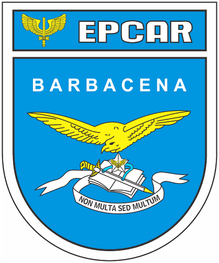
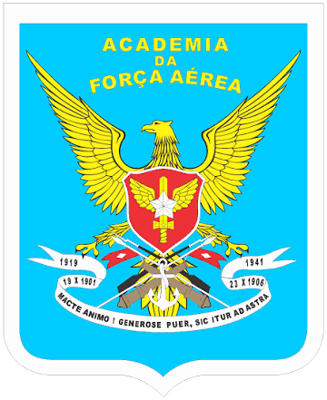
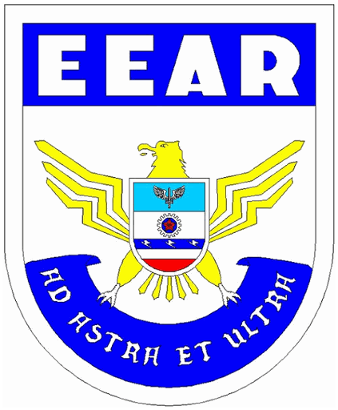
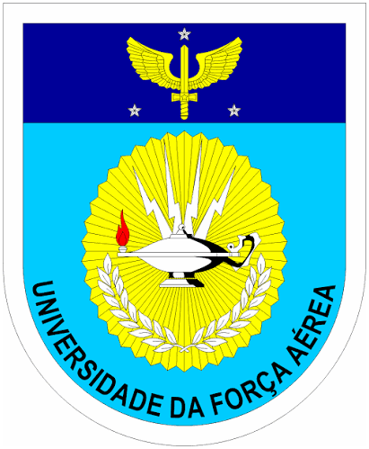
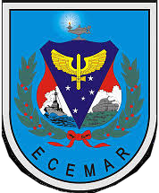

DIRENS
Diretoria de Ensino da Aeronáutica
Escolas, centros, cursos e notícias do ensino da Força Aérea Brasileira.

Instituições subordinadas

EPCAREscola Preparatória de Cadetes do Ar
Preparação para a AFA
Abrir site →
AFAAcademia da Força Aérea
Formação de oficiais
Abrir site →
EEAREscola de Especialistas de Aeronáutica
Formação de especialistas
Abrir site →
UNIFAUniversidade da Força Aérea
Instituição de ensino superior
Abrir site → EAOAR
EAOAREscola de Aperfeiçoamento de Oficiais da Aeronáutica
Aperfeiçoamento de oficiais, vinculada à UNIFA na FAAAB
Abrir site →
ECEMAREscola de Comando e Estado-Maior da Aeronáutica
Estado-Maior, vinculada à UNIFA na FAAAB
Abrir site →Noticiário
Sem notícia.